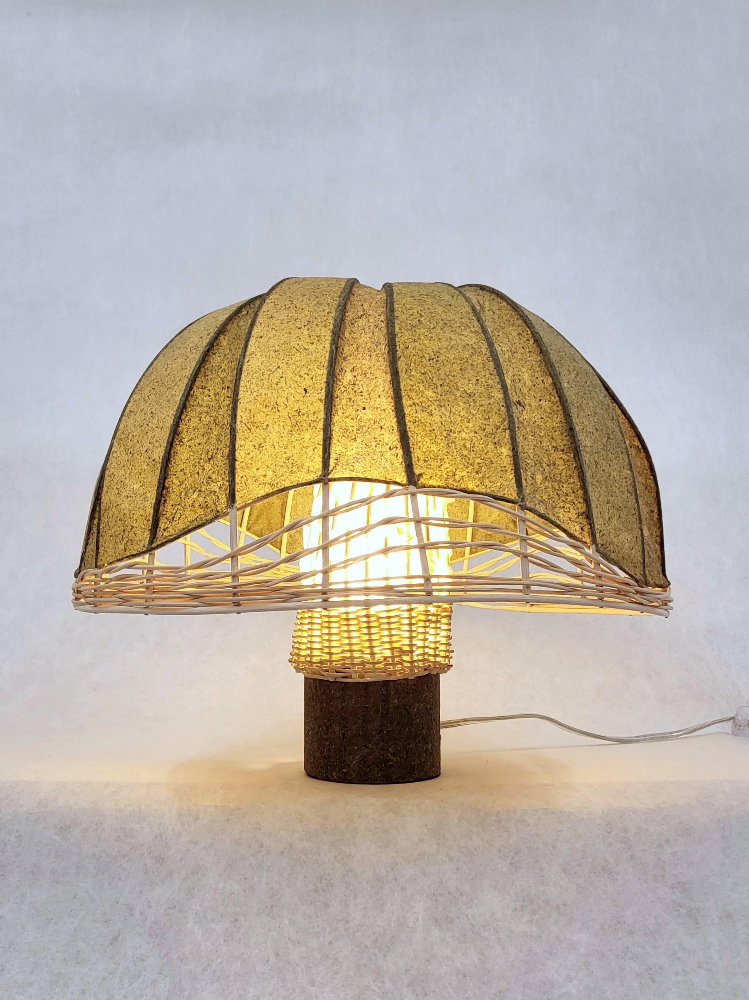
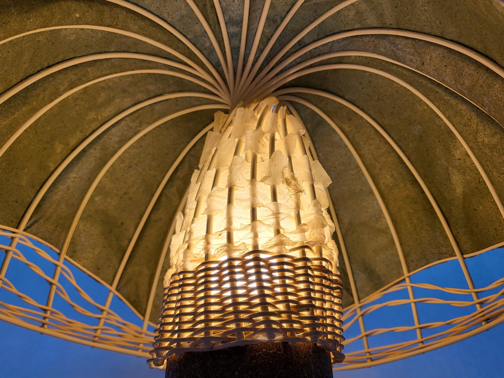
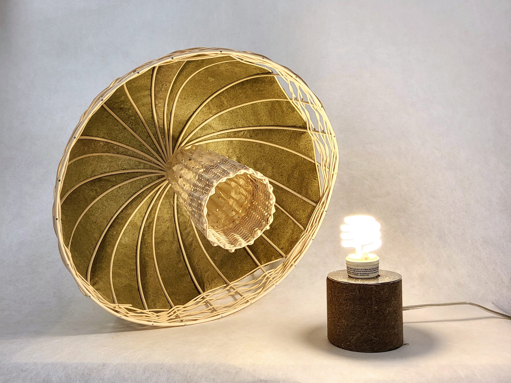

Nón trẻ chăn trâu, 2023
handmade banana leaf and abaca paper, basket reed



The lamp is a meditation on weaving, paper, and banana leaves illuminated to highlight the complexity of care in the making. The paper was handmade by myself from the harvesting of the banana leaf to the beating of fibers for sheet-forming. I was interested to see how paper and reed could substitute for one another in this project, such as when the reed weaving turns into paper weaving and the negative spaces in the reed structure become filled in with paper.
"Nón trẻ chăn trâu" translates to "the hat of the child who herds buffalo."
Completed in residence at Women's Studio Workshop January-February 2023.